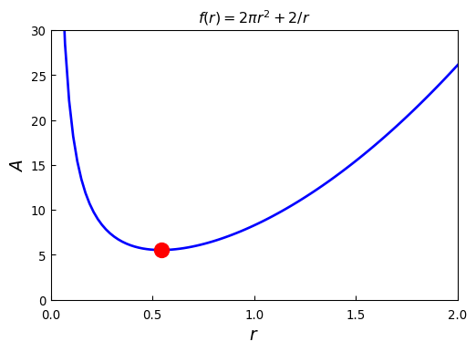
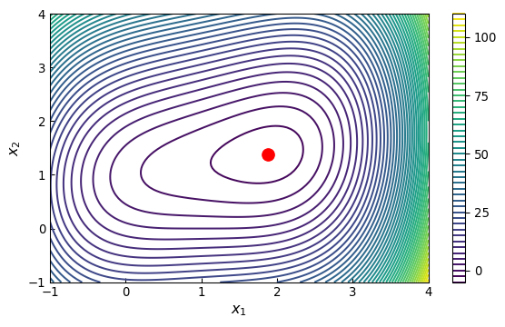
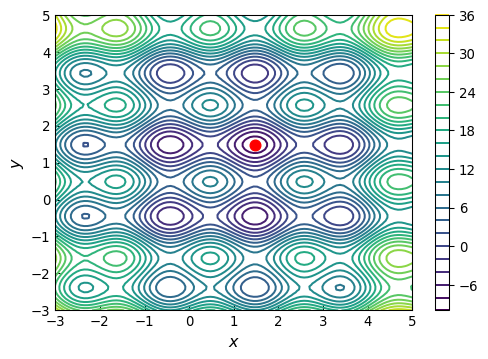
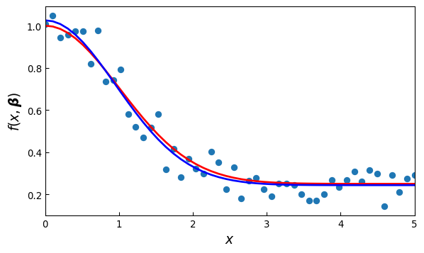

import numpy as np
import sympy
sympy.init_printing()
from scipy import optimize
import cvxopt
import matplotlib as mpl
import matplotlib.pyplot as plt
from IPython.display import display
print("cvxopt: ", cvxopt.__version__)cvxopt: 1.3.2\(~\)
In this appendix,
We discuss using scipy’s optimization module optimize for nonlinear optimization problems,
and we will briefly explore using the convex optimization library cvxopt for linear optimization problems with linear constraints. This library also has powerful solvers for quadratic programming problems. For more information, see the project’s web site http://cvxopt.org
import numpy as np
import sympy
sympy.init_printing()
from scipy import optimize
import cvxopt
import matplotlib as mpl
import matplotlib.pyplot as plt
from IPython.display import display
print("cvxopt: ", cvxopt.__version__)cvxopt: 1.3.2A general optimization problem considered here can be formulated as a minimization problem, \(\min_x f(x)\), subject to sets of \(m\) equality constraints \(g(x)=0\) and \(p\) inequality constraints \(h(x) \leq 0\)
Depending on the properties of the objective function \(f(x)\) and the equality and inequality constraints \(g(x)\) and \(h(x)\), this formulation includes a rich variety of problems
Minimize the area of a cylinder with unit volume. Here, suitable variables are the radius and height of the cylinder, and the objective function is
\[ f(r,h) = 2\pi r^2 + 2\pi rh\]
subject to the equality constraint
\[ g(r,h) = \pi r^2h -1 = 0 \]
r, h = sympy.symbols("r, h")
Area = 2 *sympy.pi *r**2 + 2 *sympy.pi *r *h
Volume = sympy.pi *r**2 *hh_r = sympy.solve(Volume -1)[0]
h_r\(\displaystyle \left\{ h : \frac{1}{\pi r^{2}}\right\}\)
Area_r = Area.subs(h_r)
Area_r\(\displaystyle 2 \pi r^{2} + \frac{2}{r}\)
# f'(r_sol) = 0
rsol = sympy.solve(Area_r.diff(r))[0]
rsol\(\displaystyle \frac{2^{\frac{2}{3}}}{2 \sqrt[3]{\pi}}\)
_.evalf()\(\displaystyle 0.541926070139289\)
# f''(r_sol) > 0
Area_r.diff(r, 2).subs(r, rsol)\(\displaystyle 12 \pi\)
Area_r.subs(r, rsol)\(\displaystyle 3 \sqrt[3]{2} \sqrt[3]{\pi}\)
# Minimum Area
_.evalf()\(\displaystyle 5.53581044593209\)
def f(r):
return 2 *np.pi *r**2 + 2 /rr_min = optimize.brent(f, brack=(0.1, 4))
r_min\(\displaystyle 0.541926077255714\)
f(r_min)\(\displaystyle 5.53581044593209\)
optimize.minimize_scalar(f, bracket=(0.1, 4)) message:
Optimization terminated successfully;
The returned value satisfies the termination criteria
(using xtol = 1.48e-08 )
success: True
fun: 5.535810445932086
x: 0.5419260772557135
nit: 15
nfev: 18r = np.linspace(1.e-2, 2, 100)
fig, ax = plt.subplots(figsize=(6, 4))
ax.plot(r, f(r), lw=2, color='b')
ax.plot(r_min, f(r_min), 'ro', markersize=12)
ax.set_title(r"$f(r) = 2\pi r^2 +2/r$", fontsize=12)
ax.tick_params(axis='x', pad=7)
ax.set_xlabel(r"$r$", fontsize=14)
ax.set_ylabel(r"$A$", fontsize=14)
ax.set_xticks([0, 0.5, 1, 1.5, 2])
ax.set_xlim(0, 2)
ax.set_ylim(0, 30)
ax.tick_params(which='both', direction='in')
We consider the following problem:
\[\min_x f(x)\]
where the objective function is
\[ f(x) = (x_1 -1)^4 +5(x_2-1)^2 -2x_1 x_2 \]
x1, x2 = sympy.symbols("x_1, x_2")
f_sym = (x1 -1)**4 +5 *(x2 -1)**2 -2 *x1 *x2
fprime_sym = [f_sym.diff(x_) for x_ in (x1, x2)]
fhess_sym = [[f_sym.diff(x1_, x2_)
for x1_ in (x1, x2)]
for x2_ in (x1, x2)]sympy.Matrix(fprime_sym)\(\displaystyle \left[\begin{matrix}- 2 x_{2} + 4 \left(x_{1} - 1\right)^{3}\\- 2 x_{1} + 10 x_{2} - 10\end{matrix}\right]\)
sympy.Matrix(fhess_sym)\(\displaystyle \left[\begin{matrix}12 \left(x_{1} - 1\right)^{2} & -2\\-2 & 10\end{matrix}\right]\)
f_lmbda = sympy.lambdify((x1, x2), f_sym, 'numpy')
fprime_lmbda = sympy.lambdify((x1, x2), fprime_sym, 'numpy')
fhess_lmbda = sympy.lambdify((x1, x2), fhess_sym, 'numpy')def func_XY_X_Y(f):
"""
Wrapper for f(X) -> f(X[0], X[1])
"""
return lambda X: np.array(f(X[0], X[1]))f = func_XY_X_Y(f_lmbda)
fprime = func_XY_X_Y(fprime_lmbda)
fhess = func_XY_X_Y(fhess_lmbda)scipy, Newton conjugate gradient method is implemented in the function optimize.fmin_ncg. This function takes the following arguments: a python function for the objective function, a starting point, a python function for evaluating the gradient, and (optionally) a python function for evaluating the Hessianx_opt = optimize.fmin_ncg(f, (0.0, 0.0), fprime=fprime, fhess=fhess)Optimization terminated successfully.
Current function value: -3.867223
Iterations: 8
Function evaluations: 10
Gradient evaluations: 10
Hessian evaluations: 8x_optarray([1.88292613, 1.37658523])x_ = y_ = np.linspace(-1, 4, 100)
X, Y = np.meshgrid(x_, y_)
fig, ax = plt.subplots(figsize=(7, 4))
c = ax.contour(X, Y, f_lmbda(X, Y), 50)
ax.plot(x_opt[0], x_opt[1], 'ro', markersize=10)
ax.set_xlabel(r"$x_1$", fontsize=12)
ax.set_ylabel(r"$x_2$", fontsize=12)
ax.tick_params(which='both', direction='in')
plt.colorbar(c, ax=ax, ticks=[0, 25, 50, 75, 100])
Methods that approximate the Hessian are known as quasi-Newton methods, and there are also alternative iterative methods that completely avoid using the Hessian
Two popular methods are the BFGS and the conjugate-gradient methods, which are implemented in scipy as the functions optimize.fmin_bfgs (the quasi-Newton method of Broyden, Fletcher, Goldfarb, and Shanno) and optimize.fmin_cg (the conjugate-gradient method of Polak and Ribiere)
x_opt = optimize.fmin_bfgs(f, (0, 0), fprime=fprime)
x_optOptimization terminated successfully.
Current function value: -3.867223
Iterations: 9
Function evaluations: 13
Gradient evaluations: 13array([1.88292645, 1.37658596])x_opt = optimize.fmin_cg(f, (0, 0), fprime=fprime)
x_optOptimization terminated successfully.
Current function value: -3.867223
Iterations: 8
Function evaluations: 18
Gradient evaluations: 18array([1.88292612, 1.37658523])x_opt = optimize.fmin_bfgs(f, (0, 0))
x_optOptimization terminated successfully.
Current function value: -3.867223
Iterations: 9
Function evaluations: 39
Gradient evaluations: 13array([1.88292644, 1.37658595])x_opt = optimize.fmin_cg(f, (0, 0))
x_optOptimization terminated successfully.
Current function value: -3.867223
Iterations: 8
Function evaluations: 54
Gradient evaluations: 18array([1.88292612, 1.37658522])The methods for multivariate optimization that we have discussed so far all converge to a local minimum in general. For problems with many local minima, this can easily lead to a situation when the solver easily gets stuck in a local minimum, even if a global minimum exists
Although there is no complete and general solution to this problem, a practical approach that can partially alleviate this problem is to use a brute force search over a coordinate grid to find a suitable starting point for an iterative solver. At least this gives a systematic approach to find a global minimum within given coordinate ranges
In scipy, the function optimize.brute can carry out such a systematic search
To illustrate this method, consider the problem of minimizing the function
\[4 \sin\pi x + 6\sin \pi y +(x -1)^2 +(y -1)^2\]
which has a large number of local minima
def f(X):
x, y = X
return 4*np.sin(np.pi *x) +6*np.sin(np.pi *y) +(x -1)**2 +(y -1)**2x_start = optimize.brute(f, (slice(-3, 5, 0.5), slice(-3, 5, 0.5)), finish=None);
print(f'{x_start = },', f'{f(x_start) = }')x_start = array([1.5, 1.5]), f(x_start) = np.float64(-9.5)x_opt = optimize.fmin_bfgs(f, x_start)
print(f'{x_opt = },', f'{f(x_opt) = }')Optimization terminated successfully.
Current function value: -9.520229
Iterations: 4
Function evaluations: 21
Gradient evaluations: 7
x_opt = array([1.47586906, 1.48365787]), f(x_opt) = np.float64(-9.520229273055016)result = optimize.minimize(f, x_start, method='BFGS')
result message: Optimization terminated successfully.
success: True
status: 0
fun: -9.520229273055016
x: [ 1.476e+00 1.484e+00]
nit: 4
jac: [-7.153e-07 -8.345e-07]
hess_inv: [[ 2.416e-02 4.605e-06]
[ 4.605e-06 1.635e-02]]
nfev: 21
njev: 7result.xarray([1.47586906, 1.48365787])result.fun\(\displaystyle -9.52022927305502\)
def func_X_Y_to_XY(f, X, Y):
s = np.shape(X)
return f(np.vstack([X.ravel(), Y.ravel()])).reshape(*s)
x_ = y_ = np.linspace(-3, 5, 100)
X, Y = np.meshgrid(x_, y_)
fig, ax = plt.subplots(figsize=(6, 4))
c = ax.contour(X, Y, func_X_Y_to_XY(f, X, Y), 25)
ax.plot(x_opt[0], x_opt[1], 'ro', markersize=8)
ax.set_xlabel(r"$x$", fontsize=12)
ax.set_ylabel(r"$y$", fontsize=12)
plt.colorbar(c, ax=ax)
ax.tick_params(which='both', direction='in')
In general, a least square problem can be viewed as an optimization problem with the objective function \(g(\boldsymbol{\beta}) = \sum_{i=0}^m r_i^2(\boldsymbol{\beta})\), with the residuals \(r_i(\boldsymbol{\beta}) = y_i -f(x_i, \boldsymbol{\beta})\) for a set of \(m\) obervations \((x_i, y_i)\). Here \(\boldsymbol{\beta}\) is a vector with unknown parameters that specifies the function \(f(x, \boldsymbol{\beta})\). If this problem is nonlinear in the parameters \(\boldsymbol{\beta}\), it is known as a nonlinear least square problem
In scipy, the function optimize.leastsq provides a nonlinear least square solver that uses the Levenberg-Marquardt method. To illustrate how this function can be used, consider a nonlinear model on the form \(f(x,\boldsymbol{\beta})=\beta_1 +\beta_2 \exp \left( -\beta_3 x^2 \right)\) and a set of observations \((x_i, y_i)\)
Simulate the observations:
beta = (0.25, 0.75, 0.5)
def f(x, b0, b1, b2):
return b0 +b1 *np.exp(-b2 *x**2)xdata = np.linspace(0, 5, 50)
y = f(xdata, *beta)
ydata = y +0.05 *np.random.randn(len(xdata))def g(beta):
return ydata -f(xdata, *beta)optimize.leastsq function solve for the best least square fit for the parameter vector:beta_start = (1, 1, 1)
beta_opt, beta_cov = optimize.leastsq(g, beta_start)beta_optarray([0.24368959, 0.7816449 , 0.5479457 ])fig, ax = plt.subplots(figsize=(7, 4))
ax.scatter(xdata, ydata)
ax.plot(xdata, y, 'r', lw=2)
ax.plot(xdata, f(xdata, *beta_opt), 'b', lw=2)
ax.set_xlim(0, 5)
ax.set_xlabel(r"$x$", fontsize=14)
ax.set_ylabel(r"$f(x, \boldsymbol{\beta})$", fontsize=14)
ax.tick_params(which='both', direction='in')
beta_opt, beta_cov = optimize.curve_fit(f, xdata, ydata)
beta_opt # a convenience wrapper around optimize.leastsqarray([0.24368959, 0.7816449 , 0.5479457 ])A simple form of constrained optimization is the optimization where the coordinate variables are subject to some bounds. These constraints are simple because they only restrict the range of the coordinate without dependencies on the other variables
This type of problem can be solved using the L-BFGS-B method in scipy, which is a variant of the BFGS method. This solver is available through the function optimize.fmin_l_bgfs_b or via optimize.minimize with the method argument set to ‘L-BFGS-B’. To define the coordinate boundaries, the bounds keyword argument must be used, and its value should be a list of tuples that contain the minimum and maximum value of each constrained variable
Consider minimizing the objective function
\[ f(x) = (x_1 -1)^2 +(x_2 -1)^2 \]
subject to the constraints
\[ 2 \leq x_1 \leq 3 \;\text{ and } \; 0 \leq x_2 \leq 2 \]
def f(X):
x_1, x_2 = X
return (x_1 -1)**2 +(x_2 -1)**2x_opt = optimize.minimize(f, (1, 1), method='BFGS').x
x_optarray([1., 1.])bnd_x1, bnd_x2 = (2, 3), (0, 2)
x_cons_opt = optimize.minimize(f, (1, 1),
method='L-BFGS-B', bounds=[bnd_x1, bnd_x2]).x
x_cons_optarray([2., 1.])x_ = y_ = np.linspace(-1, 3, 100)
X, Y = np.meshgrid(x_, y_)
fig, ax = plt.subplots(figsize=(7, 4))
c = ax.contour(X, Y, func_X_Y_to_XY(f, X, Y), 50)
ax.plot(x_opt[0], x_opt[1], 'b*', markersize=10)
ax.plot(x_cons_opt[0], x_cons_opt[1], 'ro', markersize=10)
bound_rect = plt.Rectangle((bnd_x1[0], bnd_x2[0]),
bnd_x1[1] - bnd_x1[0], bnd_x2[1] - bnd_x2[0],
facecolor="grey")
ax.add_patch(bound_rect)
ax.tick_params(axis='x', pad=7)
ax.set_xlabel(r"$x_1$", fontsize=12)
ax.set_ylabel(r"$x_2$", fontsize=12)
plt.colorbar(c, ax=ax)
ax.tick_params(which='both', direction='in')Constraints that are defined by equalities or inequalities that include more than one variable are more complicated to deal with. However, using the Lagrange multipliers, it is possible to convert a constrained optimization problem to an unconstrained problem by introducing additional variables
For example, consider the optimization problem \(\min_x f(x)\) subject to the equality constraint \(g(x)=0\). In an unconstrained optimization problem the gradient of \(f(x)\) vanish at the optimal points, \(\nabla f(x)=0\). It can be shown that the corresponding condition for constrained problems is that the negative gradient lies in the space supported by the constraint normal, \(-\nabla f(x) = \lambda J_g^T(x)\). Here \(J_g(x)\) is the Jacobian matrix of the constraint function \(g(x)\) and \(\lambda\) is the vector of Lagrange multipliers (new variables). This condition is the gradient of the function \(L(x,\lambda) = f(x) +\lambda^T g(x)\), which is known as the Lagrangian function. Therefore, if both \(f(x)\) and \(g(x)\) have continuous and smooth, a stationary point \((x_0, \lambda)\) of the \(L(x,\lambda)\) corresponds to an optimum of the original constrained optimization problem, \(x_0\)
Consider the problem of maximizing the volume of a rectangle with sides of length \(x_0\), \(x_1\) and \(x_2\), subject to the constraint that the total surface area should be unity:
\[ g(x) = 2x_1 x_2 +2 x_0x_2 +2 x_1 x_0 -1 = 0 \]
To solve this optimization problem using Lagrange multipliers, we form the Lagrangian \(L(x) = f(x) +\lambda g(x)\), and seek the stationary points for \(L(x) = 0\)
x = x0, x1, x2, l = sympy.symbols("x_0, x_1, x_2, lambda")
f = x0 *x1 *x2
g = 2 *(x0 *x1 +x1 *x2 +x2 *x0) -1
L = f +l *ggrad_L = [sympy.diff(L, x_) for x_ in x]
sols = sympy.solve(grad_L)
display(sols[0])
display(sols[1])\(\displaystyle \left\{ \lambda : - \frac{\sqrt{6}}{24}, \ x_{0} : \frac{\sqrt{6}}{6}, \ x_{1} : \frac{\sqrt{6}}{6}, \ x_{2} : \frac{\sqrt{6}}{6}\right\}\)
\(\displaystyle \left\{ \lambda : \frac{\sqrt{6}}{24}, \ x_{0} : - \frac{\sqrt{6}}{6}, \ x_{1} : - \frac{\sqrt{6}}{6}, \ x_{2} : - \frac{\sqrt{6}}{6}\right\}\)
g.subs(sols[0])\(\displaystyle 0\)
f.subs(sols[0])\(\displaystyle \frac{\sqrt{6}}{36}\)
There exists various numerical methods of applying this approach. One example is the method known as sequential least squares programming, abbreviated as SLSQP, which is available in the scipy as the optimize.fmin_slsqp function and via optimize.minimize with method='SLSQP'
The optimize.minimize function takes the keyword argument constraints, which should be a list of dictionaries that each specifies a constraint. The allowed keys (values) in this dictionary are type ('eq' or 'ineq'), fun (constraint function), jac (Jacobian of the constraint function)
def f(X):
return -X[0] *X[1] *X[2]
def g(X):
return 2 *(X[0] *X[1] +X[1] *X[2] +X[2] *X[0]) -1constraints = [dict(type='eq', fun=g)]
x_cons_opt = optimize.minimize(f, [0.5, 1, 1.5],
method='SLSQP', constraints=constraints)
x_cons_opt message: Optimization terminated successfully
success: True
status: 0
fun: -0.0680413686237617
x: [ 4.082e-01 4.083e-01 4.083e-01]
nit: 18
jac: [-1.667e-01 -1.667e-01 -1.667e-01]
nfev: 77
njev: 18
multipliers: [-1.021e-01]To solve problems with inequality constraints, all we need to do is to set type='ineq' in the constraint dictionary and provide the corresponding inequality function. To demonstrate minimization of a nonlinear objective function with a nonlinear inequality constraint, we return to the quadratic problem considered previously, but in this case with inequality constraint
\[ g(x) = x_1 -1.75 -(x_0 -0.75)^4 \geq 0 \]
def f(X):
return (X[0] -1)**2 + (X[1] -1)**2
def g(X):
return X[1] -1.75 -(X[0] -0.75)**4x_opt = optimize.minimize(f, (0, 0), method='BFGS').x
constraints = [dict(type='ineq', fun=g)]
x_cons_opt = optimize.minimize(f, (0, 0),
method='SLSQP', constraints=constraints).x
x_cons_optarray([0.96857656, 1.75228252])x_ = y_ = np.linspace(-1, 3, 100)
X, Y = np.meshgrid(x_, y_)
fig, ax = plt.subplots(figsize=(7, 4))
c = ax.contour(X, Y, func_X_Y_to_XY(f, X, Y), 50)
ax.plot(x_opt[0], x_opt[1], 'bo', markersize=10)
ax.plot(x_, 1.75 +(x_ -0.75)**4, 'k-', lw=2)
ax.fill_between(x_, 1.75 +(x_ -0.75)**4, 3, color="grey")
ax.plot(x_cons_opt[0], x_cons_opt[1], 'ro', markersize=10)
ax.set_ylim(-1, 3)
ax.set_xlabel(r"$x_0$", fontsize=12)
ax.set_ylabel(r"$x_1$", fontsize=12)
plt.colorbar(c, ax=ax)
ax.tick_params(which='both', direction='in')scipy provides an alternative solver using the constrained optimization by linear approximation (COBYLA) method. This solver is accessible either through optimize.fmin_cobyla or optimize.minimize with method='COBYLA'. The previous example could just as well have been solved with this solver, by replacing method='SLSQP’ with method='COBYLA'The solution to linear optimization problem must necessarily lie on a constraint boundary, so it is sufficient to search the vertices of the intersections of the linear constraints functions. This can be done efficiently in practice. A popular algorithm for this type of problems is known as simplex, which systematically moves from one vertix to another until the optimal vertix has been reached
There are also more recent interior point methods that efficiently solve linear programming problems. With these methods, linear programming problems with thousands of variables and constraints are readily solvable
Linear programming problems are typically written in the so-called standard form:
\[ \min_x \mathbf{c}^T \mathbf{x} \]
where
\[ \mathbf{Ax} \leq \mathbf{b} \; \text{ and } \; \mathbf{x} \geq \mathbf{0}\]
Here \(\mathbf{c}\) and \(\mathbf{x}\) are vectors of length \(n\), and \(\mathbf{A}\) is a \(m \times n\) matrix and \(\mathbf{b}\) a \(m\)-vector
Consider the problem of minimizing the function
\[ f(\mathbf{x}) = -x_0 +2x_1 -3x_2 \]
subject to the three inequality constraints
\[ x_0 +x_1 \leq 1, -x_0 +3x_1 \leq 2, \; \text{ and } \; -x_1 +x_2 \leq 3\]
On the standard form
\[ \mathbf{c} = \begin{pmatrix} -1 \\ \phantom{-}2 \\ -3 \end{pmatrix}, \;\; \mathbf{A} = \begin{pmatrix} \phantom{-}1 & \phantom{-}1 & \phantom{-}0 \;\\ -1 & \phantom{-}3 & \phantom{-}0 \;\\ \phantom{-}0 & -1 & \phantom{-}1 \; \end{pmatrix}, \;\; \mathbf{b} = \begin{pmatrix} 1 \\ 2 \\ 3 \end{pmatrix} \]
To solve this problem, here we use the cvxopt library, which provides the linear programming solver with the cvxopt.solvers.lp function
c = cvxopt.matrix([-1.0, 2.0, -3.0])
A = cvxopt.matrix([[ 1.0, 1.0, 0.0],
[-1.0, 3.0, 0.0],
[ 0.0, -1.0, 1.0]])
b = cvxopt.matrix([1.0, 2.0, 3.0])sol = cvxopt.solvers.lp(c, A, b) pcost dcost gap pres dres k/t
0: -9.0000e+00 -1.6500e+01 8e+00 5e-01 9e-01 1e+00
1: -9.1144e+00 -1.0550e+01 1e+00 1e-01 2e-01 3e-01
2: -4.5831e+01 -8.7539e+01 7e+03 5e+00 1e+01 5e+01
3: -5.5905e+01 -1.2363e+01 7e+02 2e-01 4e-01 5e+01
4: -4.7236e+03 -1.2363e+01 7e+04 2e-01 4e-01 5e+03
5: -4.7149e+05 -1.2363e+01 7e+06 2e-01 4e-01 5e+05
6: -4.7148e+07 -1.2363e+01 7e+08 2e-01 4e-01 5e+07
Certificate of dual infeasibility found.x = np.array(sol['x'])
xarray([[-8.10074318],
[-6.34803624],
[-1.1984431 ]])sol['primal objective']\(\displaystyle -1.0\)
Quadratic programming problems are typically written in the so-called standard form:
\[ \min_\mathbf{x} \frac{1}{2} \mathbf{x}^T \mathbf{Q} \mathbf{x} +\mathbf{p}^T \mathbf{x} \]
subject to
\[ \mathbf{Gx} \leq \mathbf{h} \; \text{ and } \; \mathbf{Ax} = \mathbf{b} \]
Quadratic programs can be solved via the cvxopt.solvers.qp() function
As an example, consider the following QP:
\[ \min_{x_1, x_2} 2x_1^2 +x_2^2 + x_1 x_2 +x_1 +x_2\]
subject to
\[ x_1 \geq 0,\, x_2 \geq 0 \; \text{ and } \; x_1 + x_2 =1\]
Q = 2*cvxopt.matrix([[2, 0.5], [0.5, 1]])
p = cvxopt.matrix([1.0, 1.0])
G = cvxopt.matrix([[-1.0, 0.0], [0.0,-1.0]])
h = cvxopt.matrix([0.0, 0.0])
A = cvxopt.matrix([1.0, 1.0], (1, 2))
b = cvxopt.matrix(1.0)
sol = cvxopt.solvers.qp(Q, p, G, h, A, b) pcost dcost gap pres dres
0: 1.8889e+00 7.7778e-01 1e+00 3e-16 2e+00
1: 1.8769e+00 1.8320e+00 4e-02 2e-16 6e-02
2: 1.8750e+00 1.8739e+00 1e-03 1e-16 5e-04
3: 1.8750e+00 1.8750e+00 1e-05 1e-16 5e-06
4: 1.8750e+00 1.8750e+00 1e-07 3e-16 5e-08
Optimal solution found.x = np.array(sol['x'])
xarray([[0.2500001],
[0.7499999]])sol['primal objective']\(\displaystyle 1.87500000000002\)